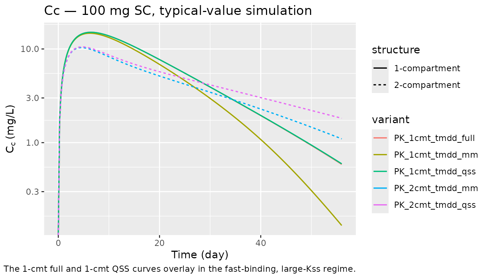
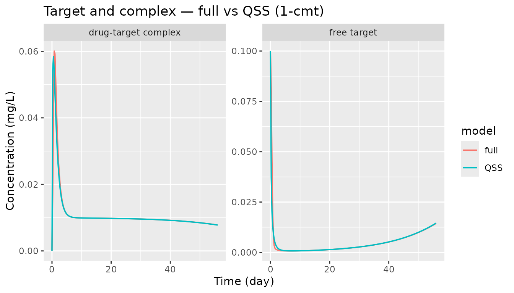
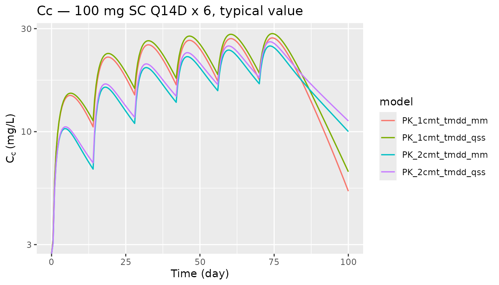

TMDD archetypes: full, QSS, and Michaelis-Menten approximations
Source:vignettes/tmdd_archetypes.Rmd
tmdd_archetypes.RmdOverview
nlmixr2lib ships five canonical target-mediated drug
disposition (TMDD) archetypes. They are intended as starting scaffolds
for mAb PK modelling, not drug-specific fits; the initial estimates are
plausible mAb-scale defaults.
| Model | Structural form | Drug compartments | Target states |
|---|---|---|---|
PK_1cmt_tmdd_full |
Mager & Jusko 2001 | depot + central | free target + complex
|
PK_1cmt_tmdd_qss |
Gibiansky et al. 2008 | depot + central |
total_target (QSS algebraic) |
PK_1cmt_tmdd_mm |
Gibiansky et al. 2008 | depot + central | none (saturable elimination) |
PK_2cmt_tmdd_qss |
Gibiansky et al. 2008 | depot + central + peripheral1 |
total_target (QSS algebraic) |
PK_2cmt_tmdd_mm |
Gibiansky et al. 2008 | depot + central + peripheral1 | none (saturable elimination) |
Source citations, stored in each model’s reference
field:
vapply(
c("PK_1cmt_tmdd_full", "PK_1cmt_tmdd_qss", "PK_1cmt_tmdd_mm",
"PK_2cmt_tmdd_qss", "PK_2cmt_tmdd_mm"),
function(nm) nlmixr2est::nlmixr(readModelDb(nm))$reference,
character(1)
)
#> PK_1cmt_tmdd_full
#> "Mager DE, Jusko WJ. General pharmacokinetic model for drugs exhibiting target-mediated drug disposition. J Pharmacokinet Pharmacodyn. 2001;28(6):507-532. doi:10.1023/A:1014414520282"
#> PK_1cmt_tmdd_qss
#> "Gibiansky L, Gibiansky E, Kakkar T, Ma P. Approximations of the target-mediated drug disposition model and identifiability of model parameters. J Pharmacokinet Pharmacodyn. 2008;35(5):573-591. doi:10.1007/s10928-008-9102-8"
#> PK_1cmt_tmdd_mm
#> "Gibiansky L, Gibiansky E, Kakkar T, Ma P. Approximations of the target-mediated drug disposition model and identifiability of model parameters. J Pharmacokinet Pharmacodyn. 2008;35(5):573-591. doi:10.1007/s10928-008-9102-8"
#> PK_2cmt_tmdd_qss
#> "Gibiansky L, Gibiansky E, Kakkar T, Ma P. Approximations of the target-mediated drug disposition model and identifiability of model parameters. J Pharmacokinet Pharmacodyn. 2008;35(5):573-591. doi:10.1007/s10928-008-9102-8"
#> PK_2cmt_tmdd_mm
#> "Gibiansky L, Gibiansky E, Kakkar T, Ma P. Approximations of the target-mediated drug disposition model and identifiability of model parameters. J Pharmacokinet Pharmacodyn. 2008;35(5):573-591. doi:10.1007/s10928-008-9102-8"- Articles:
- Mager & Jusko 2001 — https://doi.org/10.1023/A:1014414520282
- Gibiansky et al. 2008 — https://doi.org/10.1007/s10928-008-9102-8
Population and units
These are generic archetypes; no specific population is represented.
Units are time = day, dosing = mg,
concentration = mg/L. Free drug, free target, and
drug-target complex are all carried as concentrations in
mg/L so the rate constants are unit-consistent without a
molecular-weight conversion. A user who prefers molar units (nM) can
re-interpret the concentration-bearing parameters (lT0,
lkon, lKss, lVm,
propSd) in that system.
Initial estimates are plausible mAb-scale defaults (Mager & Jusko
2001 canonical TMDD behaviour; Davda 2014 linear-PK meta-analysis
anchors for clearance/volume). They are not fit to any
specific dataset; the per-field population$notes metadata
in each model file states this explicitly.
Source trace
Per-parameter origin is recorded as an in-file comment next to each
ini() entry in the model source under
inst/modeldb/pharmacokinetics/PK_*_tmdd_*.R. The table
below collects the equation references.
| Parameter (symbol) | Mager & Jusko 2001 | Gibiansky et al. 2008 |
|---|---|---|
| CL, Vc (linear disposition) | Eq 1 (k_el * V, V) | Eq 8 / Eq 10 (k_el * V, V) |
| Vp, Q (peripheral, 2-cmt) | n/a | two-compartment extension (implicit) |
| Ka, F (absorption) | Eq 1 (input term) | Eq 6 (input term) |
| T0 = ksyn / kdeg | Eq 2 (R0) | Eq 9 (Rtot(0)) |
| kdeg | Eq 2 (k_deg) | Eq 9 (k_deg) |
| kint | Eq 3 (k_int) | Eq 9 / Eq 10 (k_int) |
| kon, koff (full only) | Eq 1 (k_on, k_off) | n/a (eliminated by QSS / MM) |
| Kss = (koff + kint)/kon | n/a (full keeps kon/koff explicit) | Eq 7 (Kss) |
| Vm, Km (MM only) | n/a | Eq 10 (V_m = k_int * R0, K_m approx Kss) |
Typical-value simulations
The three 1-compartment variants share the same drug-disposition parameters and differ only in how target binding is handled. The two 2-compartment variants add a peripheral distribution compartment for drug. The code below simulates each model with between-subject variability zeroed out (typical individual) over 56 days after a single SC dose and after repeated SC dosing.
solve_typical <- function(model_name, events) {
ui <- nlmixr2est::nlmixr(readModelDb(model_name))
ui_typ <- rxode2::zeroRe(ui)
sim <- rxode2::rxSolve(ui_typ, events, returnType = "data.frame")
sim$model <- model_name
sim
}Single-dose profiles (100 mg SC)
ev_single <- rxode2::et(amt = 100, cmt = "depot") |>
rxode2::et(seq(0, 56, by = 0.25))
sims_single <- dplyr::bind_rows(lapply(
c("PK_1cmt_tmdd_full", "PK_1cmt_tmdd_qss", "PK_1cmt_tmdd_mm",
"PK_2cmt_tmdd_qss", "PK_2cmt_tmdd_mm"),
solve_typical, events = ev_single
))
#> ℹ omega/sigma items treated as zero: 'etalcl', 'etalvc', 'etalka'
#> ℹ omega/sigma items treated as zero: 'etalcl', 'etalvc', 'etalka'
#> ℹ omega/sigma items treated as zero: 'etalcl', 'etalvc', 'etalka'
#> ℹ omega/sigma items treated as zero: 'etalcl', 'etalvc', 'etalka'
#> ℹ omega/sigma items treated as zero: 'etalcl', 'etalvc', 'etalka'
sims_single |>
dplyr::mutate(structure = ifelse(grepl("1cmt", model), "1-compartment", "2-compartment"),
variant = sub("PK_._cmt_tmdd_", "", model)) |>
ggplot(aes(time, Cc, colour = variant, linetype = structure)) +
geom_line(linewidth = 0.6) +
scale_y_log10() +
labs(x = "Time (day)", y = expression(C[c] ~ "(mg/L)"),
title = "Cc — 100 mg SC, typical-value simulation",
caption = "The 1-cmt full and 1-cmt QSS curves overlay in the fast-binding, large-Kss regime.",
colour = "variant", linetype = "structure")
#> Warning in scale_y_log10(): log-10 transformation introduced
#> infinite values.
Target and complex trajectories (1-cmt models)
The full model carries target (free) and
complex as explicit ODE states. The QSS model carries
total_target = free + complex as a single state and derives
the split algebraically. The MM model collapses target into a saturable
elimination pathway and does not expose target state variables.
sim_full <- solve_typical("PK_1cmt_tmdd_full", ev_single)
#> ℹ omega/sigma items treated as zero: 'etalcl', 'etalvc', 'etalka'
sim_qss <- solve_typical("PK_1cmt_tmdd_qss", ev_single)
#> ℹ omega/sigma items treated as zero: 'etalcl', 'etalvc', 'etalka'
target_long <- dplyr::bind_rows(
tibble::tibble(time = sim_full$time, value = sim_full$target,
species = "free target", model = "full"),
tibble::tibble(time = sim_full$time, value = sim_full$complex,
species = "drug-target complex", model = "full"),
tibble::tibble(time = sim_qss$time,
value = sim_qss$total_target - sim_qss$complex,
species = "free target", model = "QSS"),
tibble::tibble(time = sim_qss$time, value = sim_qss$complex,
species = "drug-target complex", model = "QSS")
)
ggplot(target_long, aes(time, value, colour = model)) +
geom_line(linewidth = 0.6) +
facet_wrap(~ species, scales = "free_y") +
labs(x = "Time (day)", y = "Concentration (mg/L)",
title = "Target and complex — full vs QSS (1-cmt)")
Repeated SC dosing — drug-concentration difference across structures
ev_multi <- rxode2::et(amt = 100, cmt = "depot", ii = 14, addl = 5) |>
rxode2::et(seq(0, 100, by = 0.5))
sims_multi <- dplyr::bind_rows(lapply(
c("PK_1cmt_tmdd_qss", "PK_2cmt_tmdd_qss",
"PK_1cmt_tmdd_mm", "PK_2cmt_tmdd_mm"),
solve_typical, events = ev_multi
))
#> ℹ omega/sigma items treated as zero: 'etalcl', 'etalvc', 'etalka'
#> ℹ omega/sigma items treated as zero: 'etalcl', 'etalvc', 'etalka'
#> ℹ omega/sigma items treated as zero: 'etalcl', 'etalvc', 'etalka'
#> ℹ omega/sigma items treated as zero: 'etalcl', 'etalvc', 'etalka'
sims_multi |>
ggplot(aes(time, Cc, colour = model)) +
geom_line(linewidth = 0.6) +
scale_y_log10() +
labs(x = "Time (day)", y = expression(C[c] ~ "(mg/L)"),
title = "Cc — 100 mg SC Q14D x 6, typical value")
#> Warning in scale_y_log10(): log-10 transformation introduced
#> infinite values.
Regime-convergence check
The Gibiansky 2008 derivation shows that the QSS approximation should
recover the full Mager–Jusko model when drug-target binding and
unbinding are fast relative to internalization and drug disposition.
Equivalently Kss = (koff + kint)/kon should be small
relative to drug concentration for the approximation to hold.
The default parameter values put the model in that regime (kon = 1 L/mg/day, koff = 0.1 /day, kint = 1 /day so Kss = 1.1 mg/L, well below the Cc peak of ~15 mg/L for a 100-mg SC dose). The overlay of the full and QSS curves above is the asymptotic result.
Assumptions and deviations
- Initial estimates are generic mAb-scale defaults, not derived from
any specific trial. The archetypes are scaffolds; users must override
the numeric starting values in
ini()when fitting a real dataset. - All concentration-bearing quantities (drug, free target, complex)
are in
mg/L. Thekonparameter has unitsL/(mg*day). For a given molecular weight, a conversion to the more conventional molar units (nM, 1/(nM*day)) is a multiplicative factor onT0,kon, andKss. - The full model’s
Ccis free drug concentration (Mager & Jusko 2001 convention). The QSS and MM models’Ccis total drug concentration (Gibiansky 2008 convention) because the central compartment state holds the total drug amount in those reductions. Users whose assay reads total drug on the full model can compute it asCc_total <- Cc + complex. - No population (IIV, residual error) simulation is shown here; the between-subject variance defaults in the models are placeholders. VPCs belong in drug-specific vignettes.
-
PKNCAvalidation is intentionally omitted: these archetypes do not target any published NCA table. Drug-specific TMDD vignettes (futurespecificDrugs/entries) should include a full PKNCA comparison against their source tables.